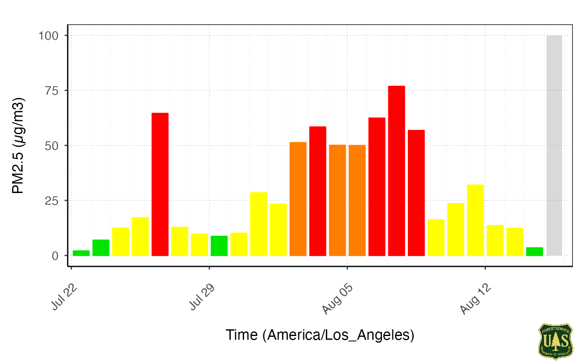
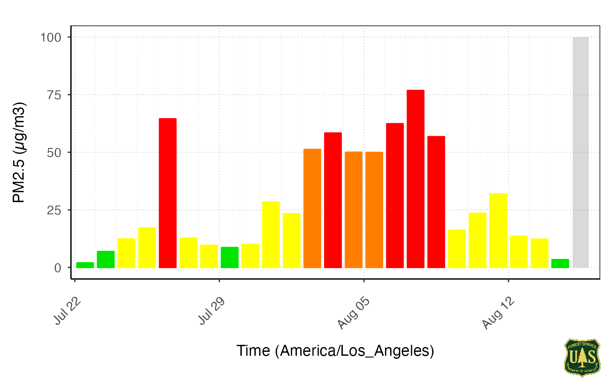
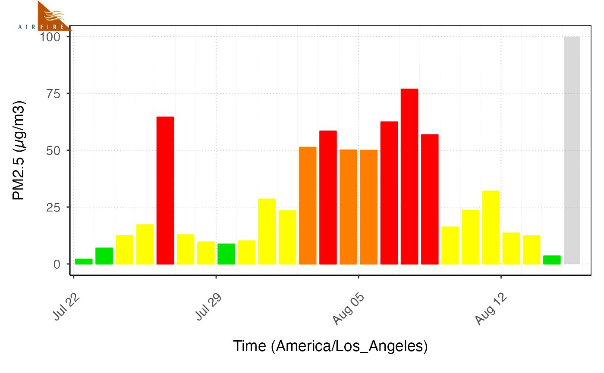
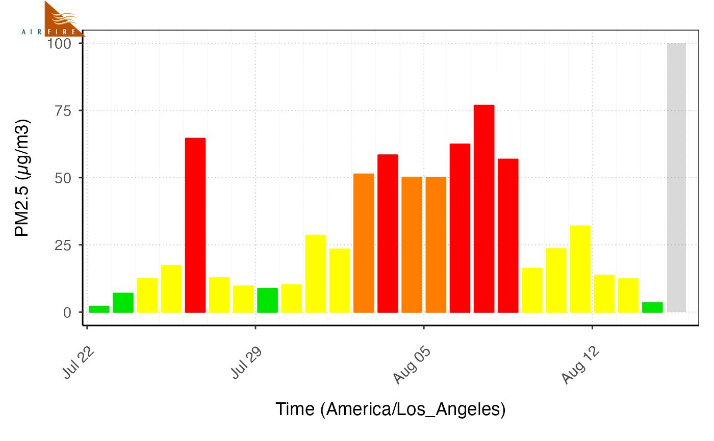

Adds an image to a ggplot object. This allows the use of package internal
logos associated with Mazama Science and the USFS AirFire group specified
with brandStyle and brandName. User provided images can be
specified by using brandFilePath.
Arguments
- plot
ggplotobject- brandStyle
"logo"or"icon".- brandName
Name of brand:
"MazamaScience","USFS", or"AirFire".- brandFilePath
Path to brand logo or icon. If not
NULL, overridesbrandStyleandbrandName.- location
String indicating the location where the logo should be printed. Options are:
"topright","topleft","bottomright", or"bottomleft".- size
Brand icon or logo width, in fraction of plot width.
Value
A gTree object, which can be printed with grid.draw().
Examples
library(AirMonitorPlots)
monitor <- AirMonitor::Carmel_Valley
mts_tidy <- monitor_toTidy(monitor)
gg <-
ggplot_pm25Timeseries(mts_tidy) +
stat_dailyAQCategory(adjustylim = TRUE)
brandPlot(gg, location = "topright", size = .2)
#> Warning: Removed 9 rows containing non-finite outside the scale range
#> (`stat_daily_aqi_level()`).
#> Warning: Removed 1 row containing missing values or values outside the scale range
#> (`geom_bar()`).
 #> NULL
#> NULL
 brandPlot(gg, location = "bottomright", brandName = "USFS")
#> Warning: Removed 9 rows containing non-finite outside the scale range
#> (`stat_daily_aqi_level()`).
#> Warning: Removed 1 row containing missing values or values outside the scale range
#> (`geom_bar()`).

#> NULL
brandPlot(gg, location = "bottomright", brandName = "USFS")
#> Warning: Removed 9 rows containing non-finite outside the scale range
#> (`stat_daily_aqi_level()`).
#> Warning: Removed 1 row containing missing values or values outside the scale range
#> (`geom_bar()`).

#> NULL
 brandPlot(gg, brandName = "AirFire", location = "topleft", size = .15)
#> Warning: Removed 9 rows containing non-finite outside the scale range
#> (`stat_daily_aqi_level()`).
#> Warning: Removed 1 row containing missing values or values outside the scale range
#> (`geom_bar()`).

#> NULL
brandPlot(gg, brandName = "AirFire", location = "topleft", size = .15)
#> Warning: Removed 9 rows containing non-finite outside the scale range
#> (`stat_daily_aqi_level()`).
#> Warning: Removed 1 row containing missing values or values outside the scale range
#> (`geom_bar()`).

#> NULL